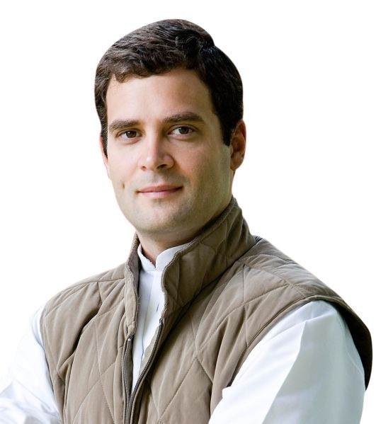
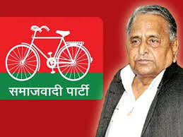
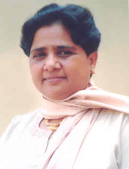
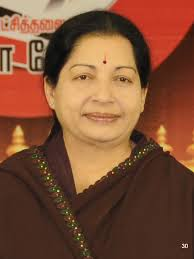
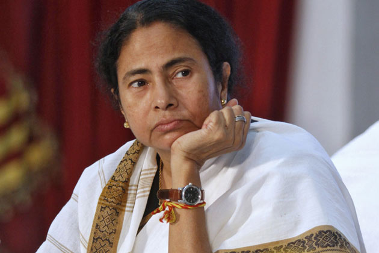
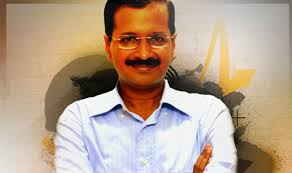
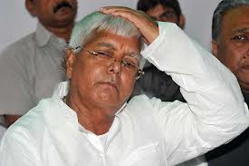

-

updated on 7/7/14
Rahul Gandhi
Rahul Gandhi About this sound pronunciation [ˈraːɦʊl ˈɡaːnd̪ʱiː]; (born 19 June 1970) is the Vice-President of the Indian National Congress party and the Chairperson of the Indian Youth Congress and the National Students Union of India. Gandhi served as a general secretary in the All India Congress Committee and represents Amethi as its Member of Parliament (MP). He is the second-ranked member of the Congress Working Committee.
Gandhi comes from the politically influential Nehru–Gandhi family. His late father, Rajiv Gandhi, had served as the Prime Minister of India and had been President of the Congress Party. His mother Sonia Gandhi is currently serving as the President of the Congress Party. He grew up in New Delhi, where his grandmother Indira Gandhi, was serving as Prime Minister until her assassination in 1984. His father was likewise assassinated in 1991. Due to security concerns, Gandhi constantly had to shift schools in his youth. He studied abroad under a pseudonym, his identity being known only to a select few including university officials and security agencies.
After obtaining degrees in international relations and development studies at the universities of Rollins and Cambridge, Gandhi worked at the Monitor Group, a management consulting firm in London, before establishing the Mumbai-based technology outsourcing firm, Backops Services Private Ltd. In 2004, Gandhi re-entered public life; he ran for and won his father's old seat of Amethi in India's national legislature. A few years later, in 2007, Gandhi was elected as the General Secretary of the Congress party, a previously executive post held by his father, and by his great-grandfather, Jawaharlal Nehru. Once described as a youth icon, Gandhi is the leader of the Indian Youth Congress and the National Students Union of India. Amidst calls from Congress party veterans for his greater involvement in party politics and national government, Gandhi was elected Congress Vice-President in 2013.
Read more >> -
 updated on 7/7/14
updated on 7/7/14Narendra Modi
Narendra Damodardas Modi ([n?re?nd?r? d???mo?d??r?d???s mo?d?i?] , born 17 September 1950) is the 15th and current Prime Minister of India. Modi, a leader of the Bharatiya Janata Party (BJP), also served as the Chief Minister of Gujarat state from 2001 to 2014. He is currently the Member of Parliament (MP) from Varanasi. Modi was a key strategist for the BJP in the successful 1995 and 1998 Gujarat state election campaigns. He became Chief Minister of Gujarat in October 2001 and served longer in that position than anyone else to date. Modi was a major campaign figure in the 2009 general election, which the BJP-led National Democratic Alliance lost to the Congress-led United Progressive Alliance (UPA). He led the BJP in the 2014 general election, which resulted in an outright majority for the BJP in the Lok Sabha (the lower house of the Indian parliament) – the last time that any party had secured an outright majority in the Lok Sabha was in 1984. Modi is a Hindu Nationalist and a member of the Rashtriya Swayamsevak Sangh (RSS). He is a controversial figure both within India as well as internationally as his administration has been criticised for failing to act to prevent the 2002 Gujarat riots. Modi has been praised for his economic policies, which are credited with creating an environment for a high rate of economic growth in Gujarat. However, his administration has also been criticised for failing to make a significant positive impact upon the human development of the state.
Read more >> -

updated on 7/7/14
Mulayam Singh Yadav
Mulayam Singh Yadav (born 21 November 1939) is an Indian politician belonging to the Samajwadi Party from Uttar Pradesh. He served as the Chief Minister of Uttar Pradesh between 2003-2007 and previously held the office during 1989–91 and 1993–95. He also served as Minister of Defence (1996–98) in the United Front government. Currently, he serves in the Lok Sabha representing Azamgarh.Mulayam Singh Yadav was born to Murti Devi and Sughar Singh on 21 November 1939 in the village Saifai of Etawah district of Uttar Pradesh in India.
He has gained several degrees — a B.A., B.T., and an M.A. in political science — through his education at K.K. College in Etawah, A.K. College in Shikohabad and B.R. College, Agra University.
Yadav married twice. His first wife was Malti Devi, whose son is Akhilesh Yadav (born 1973), the current Chief Minister of Uttar Pradesh. Malti Devi died in May 2003. Yadav's second wife is Sadhna Yadav, with whom he has a son named Prateek Yadav (born 1988). Prateek manages land holdings of the Yadav family.[6] Mulayam's second wife was not well known till February 2007, when he admitted for the first time in India's Supreme Court that he had two wives.
Read more >>
-

7/7/14
Mayawati
Mayawati (Hindi: मायावती, ) (full name: Mayawati Kumari, born 15 January 1956) is an Indian politician who served four terms as Chief Minister of Uttar Pradesh (UP) as head of the Bahujan Samaj Party (BSP), which focuses on a platform of social change to improve the welfare of the weakest strata of Indian society—the Bahujans or Dalits, Other Backward Classes, and religious minorities. She was Chief Minister briefly in 1995 and again in 1997, then from 2002 to 2003 and from 2007 to 2012. Mayawati's rise from humble beginnings has been called a "miracle of democracy" by P. V. Narasimha Rao, former Prime Minister of India. In 1993 Mayawati formed a coalition with the Samajwadi Party and became the youngest Chief Minister of Uttar Pradesh at that time. She was the first female Dalit Chief Minister in India. In 1997 and in 2002 she was Chief Minister in coalition with the Bharatiya Janata Party, the second time for a full term. Mayawati's tenure has attracted praise and controversy. Millions of Dalits view her as an icon, and refer to her as Behen-ji (sister). She has been praised for her fundraising efforts on behalf of her party and her birthdays have become major media events and a symbol for her supporters. The rise in her personal wealth and that of her party have been criticised as indicative of corruption. After losing the 2012 legislative assembly elections to the rival Samajwadi Party, she resigned from her post as party leader on 7 March 2012. Later that month she was elected by acclamation to a seat in the Rajya Sabha (upper house of Parliament).
Read more >> -

7/7/14
Jayalalithaa Jayaram
Jayalalithaa Jayaram (born 24 February 1948), commonly referred to as Jayalalithaa, is an Indian politician who has been Chief Minister of Tamil Nadu since 2011. Previously she served as chief minister from 1991 to 1996, briefly in 2001, and from 2002 to 2006. She was a popular film star in Indian cinema before her entry into politics, having appeared as the lead heroine in over 140 films which includes films in Tamil, Telugu, Kannada and worked in one Hindi film. She is the incumbent general secretary of All India Anna Dravida Munnetra Kazhagam (AIADMK). She is called 'Amma' ('Mother') and sometimes 'Puratchi Thalaivi' ('Revolutionary Leader') by her followers.[1] Although there have been claims that Jayalalithaa was introduced to politics by M. G. Ramachandran, she has denied this. She was a member of the Rajya Sabha elected from Tamil Nadu during 1984–89. Soon after the death of Ramachandran, Jayalalithaa proclaimed herself as his political heir. She is the second elected female chief minister of Tamil Nadu.
Read more >> -

7/7/14
Mamata Banerjee
Mamata Banerjee (Bengali: Mômota Bôndyopadhyay; born 5 January 1955) is an Indian politician who has been Chief Minister of West Bengal since 2011. She is the first woman to hold the office. Banerjee founded the party All India Trinamool Congress (AITMC or TMC) in 1997 and became its chairperson, after separating from the Indian National Congress. She is often referred to as Didi (meaning elder sister in Bengali). In 2011 Banerjee pulled off a landslide victory for the TMC Congress alliance in West Bengal by defeating the 34-year old Communist Party of India (Marxist)-led Left Front government, until then the world's longest-serving democratically-elected communist government. Banerjee previously served as the Minister of Railways twice and is also the first woman Railway Minister of India, Minister of Coal, and Minister of State for Human Resource Development, Department of Youth Affairs and Sports and Women and Child Development in the cabinet of the Indian government. She opposed forceful land acquisition for industrialisation by the then communist government in West Bengal for Special Economic Zones at the cost of agriculturalists and farmers. In 2012, Time magazine named her one of the "100 Most influential People in the World". In September 2012 Bloomberg Markets magazine listed her among the 50 most influential people in the world of finance. The mercurial TMC leader was voted in May 2013 as India's most honest politician in an internal poll by members of India Against Corruption, India's largest anti-corruption coalition.
Read more >> -

7/7/14
Arvind Kejriwal
Arvind Kejriwal (born 16 August 1968) is an Indian politician and former civil servant who served as the 7th Chief Minister of Delhi from 28 December 2013 to 14 February 2014. He is the leader of the Aam Aadmi Party (AAP). Kejriwal is a graduate of the Indian Institute of Technology Kharagpur and worked for the Indian Revenue Service (IRS) as a Joint Commissioner in the Income Tax Department. In 2006, Kejriwal was awarded the Ramon Magsaysay Award for Emergent Leadership recognising his involvement in a grassroots movement (Parivartan) using right-to-information legislation in a campaign against corruption. The same year, after resigning from the IRS, he donated his Magsaysay award money as a corpus fund to found the Public Cause Research Foundation, a non-governmental organisation (NGO). In 2012, he launched the Aam Aadmi Party, and defeated Chief Minister Sheila Dikshit in the 2013 Delhi Legislative Assembly election. Following the election, he took office as the Chief Minister of Delhi on 28 December 2013. He resigned 49 days later, on 14 February 2014, stating he did so because of his government's inability to pass his proposed anti-corruption legislation due to a lack of support from other political parties.
Read more >> -

7/7/14
Lalu Prasad Yadav
Lalu Prasad Yadav (born 11 June 1948)[3] is a politician from Bihar, India. He was the Minister of Railways from 2004 to 2009 in the ruling United Progressive Alliance (UPA) government, Chief Minister of Bihar from 1990 to 1997 and is the President of the Rashtriya Janata Dal political party. He was a Member of Parliament of 15th Lok Sabha from the Saran constituency in Bihar, but disqualified as MP owing to conviction for his involvement in the 1996 fodder scam. He entered politics during his student days at Patna University, and he was elected a member of the Lok Sabha in 1977 as a Janata Party candidate. At the age of 29 he was one of its youngest members of Parliament. Yadav became Chief Minister of Bihar in 1990 but resigned in 1997 following escalating corruption charges relating to the Fodder Scam. From 1997 to 2005, with brief interruptions, his wife Rabri Devi was the Chief Minister. Her political opponents often accused her as having served as his "surrogate." His tenure as Chief Minister of the state has been criticized for lawlessness and has been termed as the Jungle Raj. Many accusations have been made about him citing him as an encourager of criminality and 'Gunda Raj' in Bihar. He is known as a crowdpuller, shrewd and colourful politician, but has been criticized for promoting and encouraging caste-based politics and there are several corruption cases against him. On 3 October 2013, he was awarded a sentence of five years of rigorous imprisonment and INR25 lakh (US$42,000) fine for his role in the Fodder Scam.
Read more >>